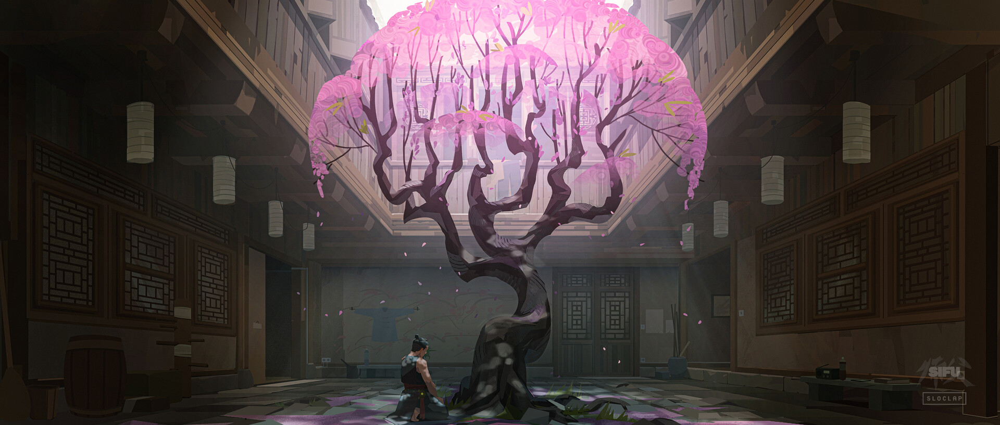
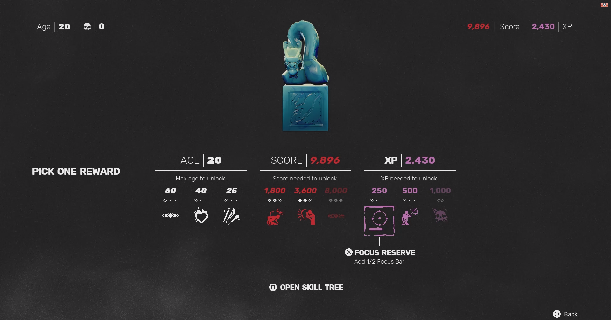
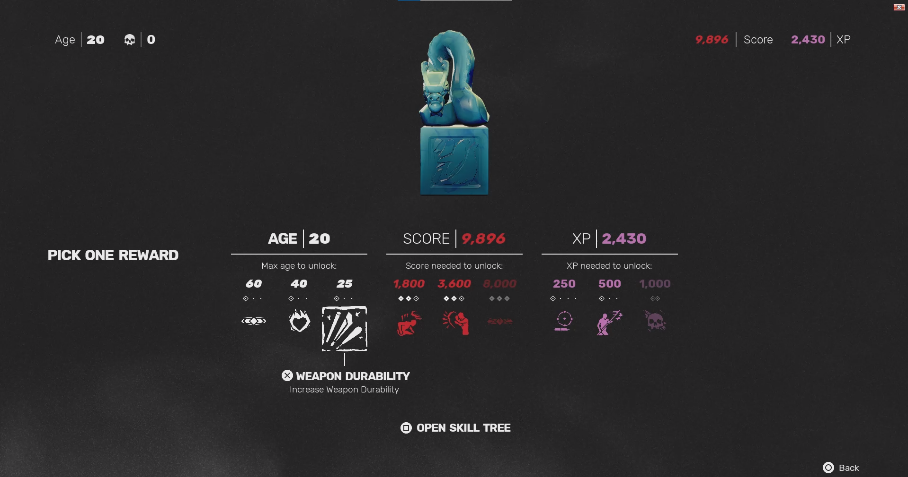
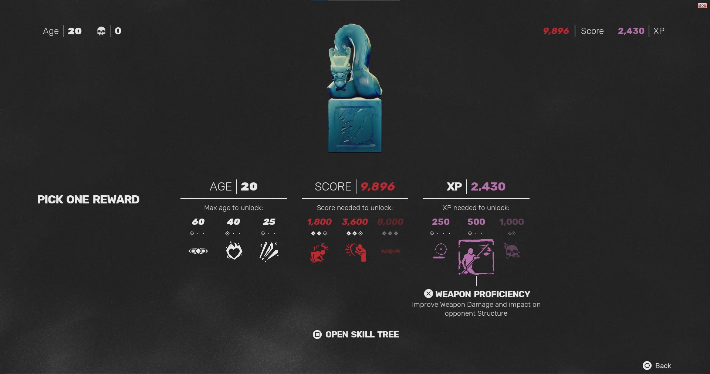
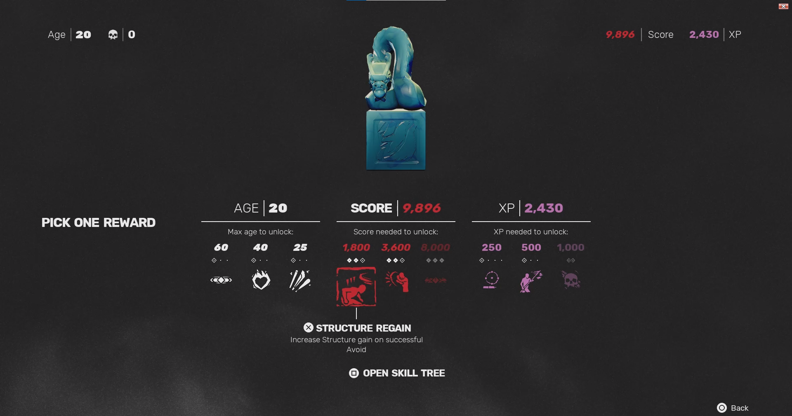
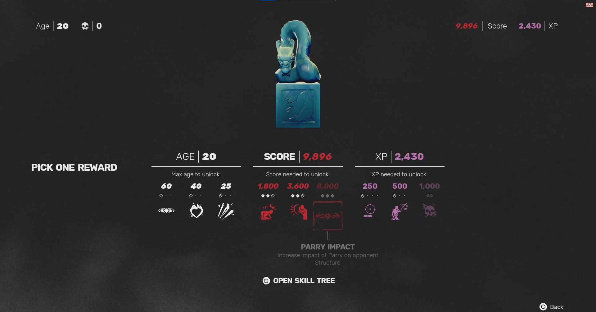
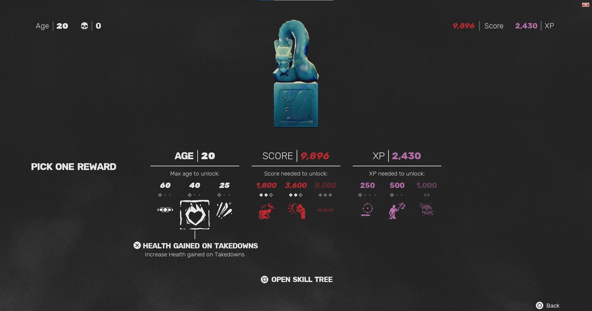

Skills to get early on
While all of the skills that could be learned in the game would eventually be permanently unlocked as you replay the levels, there are some skills that would make those attempts to claw your way back to the level boss earlier on a tad bit easier and even make dealing with said boss easier.
Snap Kick
A simple move that greatly improves your mobility while providing evasion for low attacks or just generally creating space between you and other enemies.
Chasing Trip Kick/Chasing Strikes
Chasing Trip Kick leaves the enemy knocked down while the Chasing Strikes does substantial structure damage through a flurry of punches. These two give you options to make the push, an immensely common and powerful move, be that much stronger for you to use.
Duck Strike
The majority of attacks in the game are high attacks, this move allows you to safely evade them and could potentially stun an enemy depending on the kind of attack you evaded.
This becomes especially more effective when paired with the Flowing Claw move or just generally having your back turned as this allows you to ignore any interrupts from potential hits, sacrificing a bit of health and letting you get away with a stun.
Environmental Mastery
Since you are limited by the range of your limbs, having the option to interact with any item around you gives you a lot of options from simply dealing that last bit of damage to finish someone off to opening up someone’s guard to even knocking someone down for larger items on the ground.
Slide Kick
This move makes your repositioning attempts far more destructive for the enemy while giving you the ability to evade high attacks during its animation. This pretty much is an assured knockdown move especially for the lighter enemy types.
Shrine Unlocks Ranked
Unlike the skills, there are only a select number of possible shrine unlocks in a single run, even less when you decide to go through certain paths as you progress. This makes choosing the unlocks require more thought. The following are ordered from my least recommended to most recommended.


Death Counter
This unlock allows you to completely reset your death counter down to 0. That’s pretty much it, this is immensely situational as you can already do this just by beating enemies as each one beaten decreases the counter by 1. The point would be much better put to other points instead.
Focus Reserve

While having multiple focus bars could help, there are other shrine unlocks that would help you regain your focus quickly with the number of enemies that would surround you as you try to reach the boss. This unlock is far more beneficial when you are having troubles dealing with bosses as focus attacks give you a free stun on the boss, leaving them vulnerable against your attacks.
Weapon Durability

Weapons tend to be abundant enough in the game that you realistically wouldn’t be pressed to be, even enemies are generous enough to bring you weapons to use. This unlock does have its uses when it comes to boss fights and when you manage to bring a fresh weapon giving you the chance to wail on them for a chunk of their health and structure gauge early on, making fighting them just that bit easier, although that point could be put into something else that does not require the use of a weapon.
Weapon Proficiency

This unlock makes weapons far more effective than they already are, letting you deal with waves easier if you have a weapon. This gets even better when you can bring a weapon up to a boss as this gives you a sizeable head start as you bash down onto their health and structure gauges.
Structure Reserve
Focus attacks tend to leave enemies open for attacks and gives you space to breath but these are still resources, this unlock makes gaining those resources back that much quicker just through dodging and parrying. This can make facing bosses that much easier as well as you use the focus attacks to start or extend your combos.
Structure Regain

You would need a way to regain your structure after racking it up with blocking, deflecting, and parrying; taking this unlock makes that much easier to achieve. This pairs incredibly well with regaining focus as avoiding can trigger the effects of both.
Parry Impact

This is an unlock that becomes that much more valuable the more you learn about the game and the different attack patterns of the enemies. This is especially good when dealing with waves of enemies as you can rack up takedowns relatively quickly when you have this unlocked.
Health Gained on Takedowns

Getting hit is inevitable in the game, as the only way to heal in the game is through takedowns, getting an unlock that rewards takedowns is invaluable as this gives you a larger safety net especially as you learn the game, or if you’re just trying to get back to the boss room.